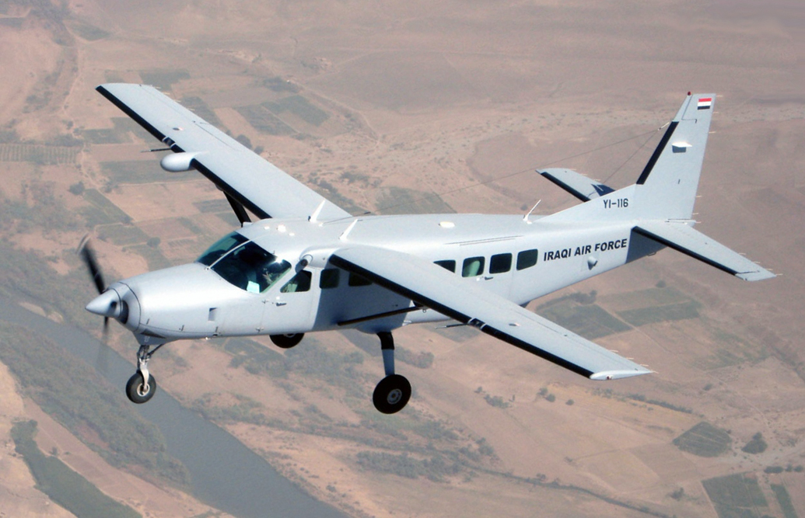
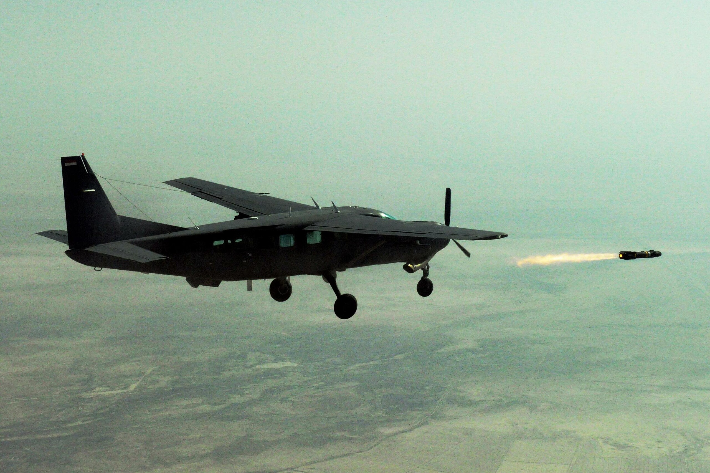

justanotherinternetguy's plane of the week
Cessna AC-208 Combat Caravan


The AC-208 started out as the Cessna 208 Caravan, a light utility and transport aircraft. It has been successfully turned into a low-cost ground attack and utility aircraft. The AC-208 is fitted with wing hardpoints for ISTAR and COIN missions. The Iraqi Air Force and the Lebanese Air Force operates the AC-208 regularly. I personally have nicknamed it the "2nd spiciest Cessna". Of course, the spiciest Cessna goes to the A-37.
Previous planes of the week: Boeing Skyfox, P-75, F-107, XA2J, P-61